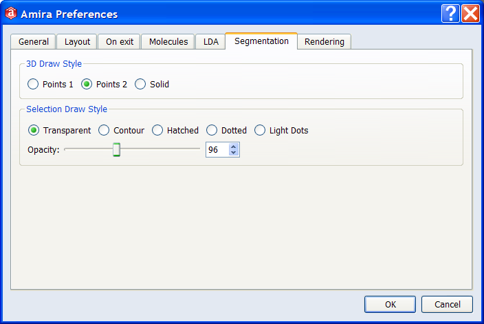

Figure 1:
The Image Segmentation Editor.
In order to activate the segmentation editor, press the Segmentation Editor
icon in the sub-application toolbar or the button of a selected Label Field.
Then an instance of the editor will
be created and a new window as shown in Figure 1 pops up.
The major parts of this new window are:
- Data area: Two drop-down menus show the loaded Image Data and
Label Field. You can load new data and label files directly from the menu bar.
To create a new label field click on the New button.
- Material List: In the central part of the editor window a
list of materials is presented. Here you can add, remove, and rename
materials, and you can select the current material. For each material you can
turn on/off the 3D and 2D view.
- View, Selection and Display: Below the material list several
settings for viewing, voxel selection and masking are available. The settings
control how the selected voxels are displayed, and activate also the mask for
rapid region selection.
- Tool Box: Several tools for interactive
manipulation of the segmentation can be selected here. Depending on the
currently selected tool additional widgets show up in the options frame.
- Info Area: Below the tool box some basic information like the
current cursor position or the material under the cursor is displayed.
- Menu Bar: From the menu bar additional tools and filters
can be accessed. Menu entries with dots (...) after the name open an
additional dialog window.
- Image Viewer(s): The biggest part of the window is covered by
one or four image viewers, displaying the labels and the current selection
in differently oriented slices.
By default, the viewer is displayed in 1-viewer or 2-viewer mode.
If you prefer to work with one larger view rather than four smaller views,
click on the Layout1 button in the viewer toolbar. To cycle through
each of the four views, press the Layout1 button repeatedly. To return to
4-viewer mode, press the Layout4 button.
Basic principle of interactive segmentation
The basic idea of interaction in the segmentation editor is to first select some voxels and then to assign them to the active
material. The simplest way of selecting pixels is to simply draw with the
mouse when the Brush or the Lasso tool is active (see below for
details). Selected pixels are displayed in red.
To add selected pixels to the active material, click the "+" button. The
active material is the material, which is currently selected in the
material list. New materials can be added by pressing the New button
above the material list. Every pixel can only be assigned to one material.
Note that even with the advanced tools provided in Amira, image
segmentation can be a time-consuming process! Due to limited main-memory
and for performance reasons, there is only a limited undo space for 2D and 3D
interaction. Therefore it is
highly recommended to frequently save the label field during the
process of segmentation.
To get started it might be a good idea, to choose the
image segmentation demo
from the Users Guide's demo section and start by
modifying an existing label field.
The menu bar
Two segmentation-specific menus are added to Amira's main menu bar:
Segmentation and Selection. The
entries of the Selection menu are described in a separate
section below. Menu entries with dots (...) after their name open an
additional dialog.
The items of the Segmentation menu are described here:
- Undo: This entry undoes the last operation.
Successive invocation of undo is
possible, allowing you to undo several operations. Note that for memory and
performance reasons, 3D operations can not be undone. Therefore it is
highly recommended to frequently save the label field.
- Orientation: You can use this to select the orientation of the
active viewer. You can also flip the x, y, or z coordinates of all of the
viewers.
- Current Viewer: You can select the active viewer. To activate a
viewer you can always just click it.
- MaterialStatistics: This entry brings up a dialog which lists
the results computed by the MaterialStatistics module on the current
data set and segmentation. For an explanation of the modes, see the
documentation of the MaterialStatistics module.
- Fill holes: Invokes a label filter. See
Label filters for more details.
- Remove islands...: Invokes a label filter. See
Label filters for more details.
- Smooth labels...: Invokes a label filter. See
Label filters for more details.
The Selection menu provides a number of filters and
operators, which modify the current selection. They are described in the
Selection filters section in details.
Menu entries with dots (...) after their name open an
additional dialog.

Figure 2:
The Preferences of the Segmentation Editor.
It is possible to specify various preferences in the Edit/Preferences
menu of the menu bar.
- 3D Draw Style: How the currently selected materials are displayed
in the 3D viewer window, when the checkbox in the Material List is selected.
- Points1, Points2, Solid: These radio buttons allow you to
choose the draw style used for drawing the currently selected voxels in the 3D viewer
window.
- Selection Draw Style: How the currently selected materials are displayed
in the 2D viewer window.
- Transparent, Contour, Hatched, Dotted, Light Dots:
These radio buttons allow you to choose the default draw style used for
drawing the currently selected voxels in the 2D viewer windows.
- Opacity: Set the opacity of the displayed regions
in the 2D viewer window.
{kind=link}
{kind=link}